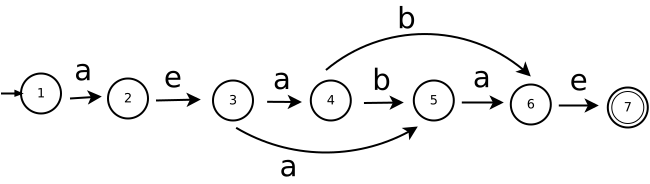

Cuestionario del primer parcial
Instrucciones. Lea con cuidado cada una de las preguntas. Contestar en una hoja de word cada una de las preguntas. Para después subir el archivo de word o puede estar en formato PDF, en el repositorio de classroom para Compiladores.
No comprimir los archivos, por favor.
Pregunta 1 2 puntos
Proyecto. Obtener la expresión regular, de: public int getEdad() {} .
Pregunta 2 2 puntos
Proyecto. Obtener el AFN de la expresión regular, de: b*(a|b)*(c|b)
Pregunta 3 3 puntos
Proyecto. Obtener el AFD del siguiente AFN:

Pregunta 4 3 puntos
Proyecto. Aplique el algoritmo de subconjuntos para convertir el siguiente autómata: